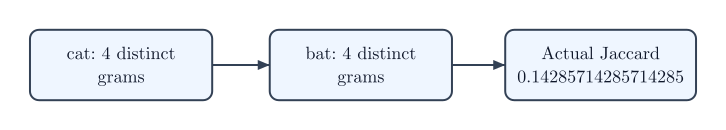
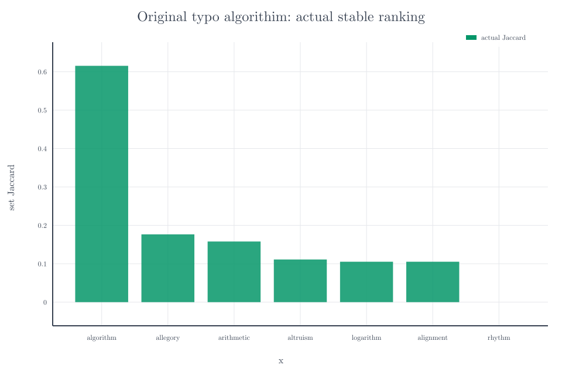
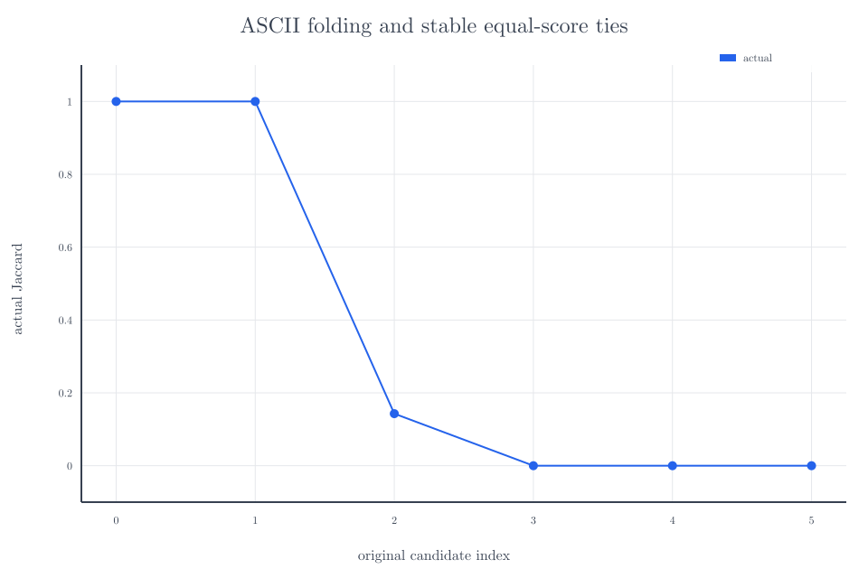
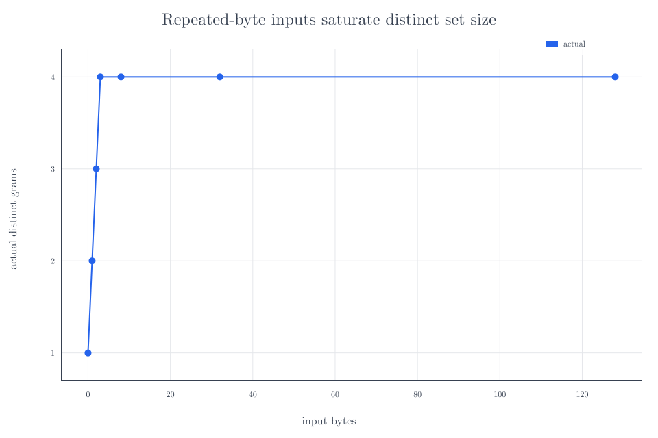

Trigram search: exact padded-byte Jaccard rankings
Abstract
A misspelled query can fail exact string search. Comparing sets of short substrings gives a simple fuzzy ranking, with an explicit choice of padding and case folding.
The method
Let A and B be distinct padded byte-trigram sets. J(A,B)=A∩B/(A+B|−|A∩B). This lies in [0,1] because the intersection is contained in the union. Two empty sets receive1. Repeated grams count once; this is set Jaccard rather than occurrence-weighted similarity. Ranking is stable for equal scores.
Simple worked example
#include <dm/dm.hpp>
int main() {
namespace a = dm::algorithms;
namespace g = dm::graphics;
std::filesystem::create_directories("build");
auto aa = a::trigrams("cat"), bb = a::trigrams("bat");
std::print("| word | actual padded grams |\n|---|---|\n|cat|`{}`|\n|bat|`{}`|\n\nActual Jaccard {}.\n",
aa, bb, a::trigram_similarity("cat", "bat"));
g::Diagram concept_diagram(48, 1100);
concept_diagram.node("n0", {0, 0},
std::format("cat: {} distinct grams", aa.size()));
concept_diagram.node("n1", {5, 0},
std::format("bat: {} distinct grams", bb.size()));
concept_diagram.node("n2", {10, 0},
std::format("Actual Jaccard {}",
a::trigram_similarity("cat", "bat")));
concept_diagram.edge("n0", "n1").edge("n1", "n2");
concept_diagram.save_svg("build/trigram_search_tiny.svg");
}| word | actual padded grams |
|---|---|
| cat | {" c", " ca", "at ", "cat"} |
| bat | {" b", " ba", "at ", "bat"} |
Actual Jaccard 0.14285714285714285.

The retained original experiment
#include <dm/dm.hpp>
int main() {
namespace a = dm::algorithms;
namespace g = dm::graphics;
std::filesystem::create_directories("build");
std::vector<std::string> dict{"algorithm", "logarithm", "rhythm",
"arithmetic", "altruism", "allegory",
"alignment"};
auto ranked = a::trigram_search(dict, "algorithim");
std::vector<double> scores;
std::vector<std::string> labels;
std::print("| candidate | actual Jaccard |\n|---|---:|\n");
for (auto[score, i] : ranked) {
scores.push_back(score);
labels.push_back(dict[i]);
std::print("|{}|{}|\n", dict[i], score);
}
auto p = g::RPlot::barplot(scores, labels, "actual Jaccard", {5, 150, 105});
p.title("Original typo algorithim: actual stable ranking").y_label(
"set Jaccard");
p.save_svg("build/trigram_search_original.svg");
}| candidate | actual Jaccard |
|---|---|
| algorithm | 0.6153846153846154 |
| allegory | 0.17647058823529413 |
| arithmetic | 0.15789473684210525 |
| altruism | 0.1111111111111111 |
| logarithm | 0.10526315789473684 |
| alignment | 0.10526315789473684 |
| rhythm | 0 |

Checking the theory and controls
#include <dm/dm.hpp>
int main() {
namespace a = dm::algorithms;
namespace g = dm::graphics;
std::filesystem::create_directories("build");
std::vector<std::string> candidates{"CAT", "cat", "bat", "", "aaaa", "aaa"};
auto r = a::trigram_search(candidates, "cat");
std::vector<double> x, y;
std::print("| original index | candidate | score |\n|---:|---|---:|\n");
for (auto[score, i] : r) {
std::print("|{}|{}|{}|\n", i,
candidates[i].empty() ? "(empty)" : candidates[i], score);
x.push_back(i);
y.push_back(score);
}
auto p = g::RPlot::create();
p.line(x, y, "actual", {37, 99, 235}, 2);
p.points(x, y, "", {37, 99, 235}, 5);
p.title("ASCII folding and stable equal-score ties").x_label(
"original candidate index").y_label("actual Jaccard");
p.save_svg("build/trigram_search_controls.svg");
}| original index | candidate | score |
|---|---|---|
| 0 | CAT | 1 |
| 1 | cat | 1 |
| 2 | bat | 0.14285714285714285 |
| 3 | (empty) | 0 |
| 4 | aaaa | 0 |
| 5 | aaa | 0 |

Sensitivity and selected work
#include <dm/dm.hpp>
int main() {
namespace a = dm::algorithms;
namespace g = dm::graphics;
std::filesystem::create_directories("build");
std::vector<double> x, y;
std::print("| repeated bytes | distinct grams | self similarity |\n|---:|---:|---:|\n");
for (int n : {0, 1, 2, 3, 8, 32, 128}) {
std::string q(n, 'a');
auto grams = a::trigrams(q);
std::print("|{}|{}|{}|\n", n, grams.size(), a::trigram_similarity(q, q));
x.push_back(n);
y.push_back(grams.size());
}
auto p = g::RPlot::create();
p.line(x, y, "actual", {37, 99, 235}, 2);
p.points(x, y, "", {37, 99, 235}, 5);
p.title("Repeated-byte inputs saturate distinct set size").x_label(
"input bytes").y_label("actual distinct grams");
p.save_svg("build/trigram_search_work.svg");
}| repeated bytes | distinct grams | self similarity |
|---|---|---|
| 0 | 1 | 1 |
| 1 | 2 | 1 |
| 2 | 3 | 1 |
| 3 | 4 | 1 |
| 8 | 4 | 1 |
| 32 | 4 | 1 |
| 128 | 4 | 1 |

Interpretation and limits
ASCII A-Z is folded deterministically; Unicode code points are not decoded. Spaces remain ordinary bytes plus the stated padding. This convention resembles trigram search tools but does not promise PostgreSQL tokenization or scoring semantics.
Every figure is saved locally by its complete editable program. No separate reconstruction supplies algorithm state. Counters describe the selected events, not elapsed time or peak memory.
References
Set Jaccard definition and set-cardinality derivation
Verified in the shared ten-document batch: 85 scoped native cases;21 directly
instrumented ASan/UBSan cases;36 executable public examples;63/63 definitions
across13 full scopes plus8 changed mixed-scope contracts;10 hovers;14393
independent records/67914 checks;frozen valid-input comparisons across all ten
families including bit-identical default Iris fits;11 checkout/installed
standalone headers and linked ten-family consumer;40 executed programs and40
inspected figures with both exports. Receipts:
build/mepml-conversion/batch-404-413/.